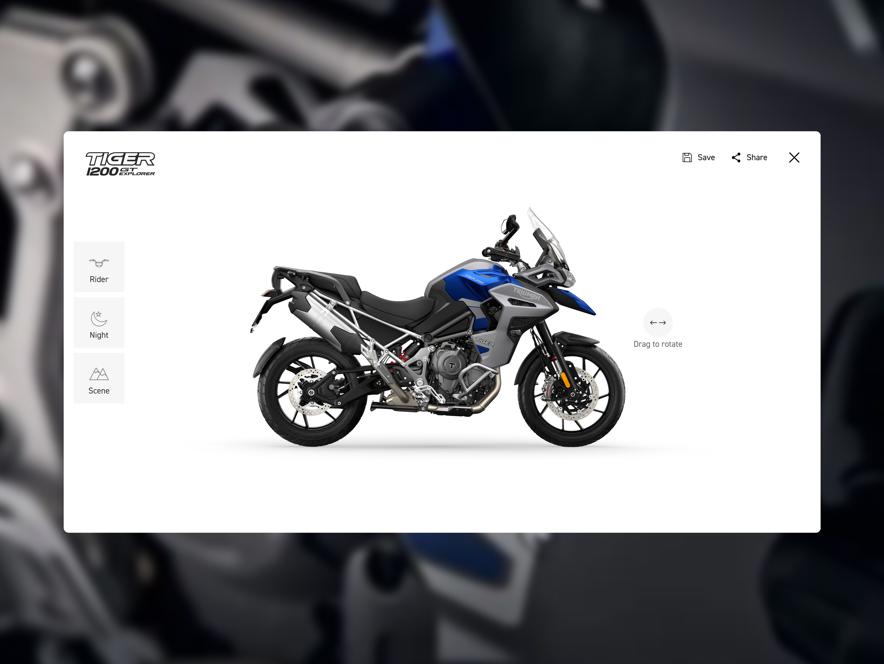
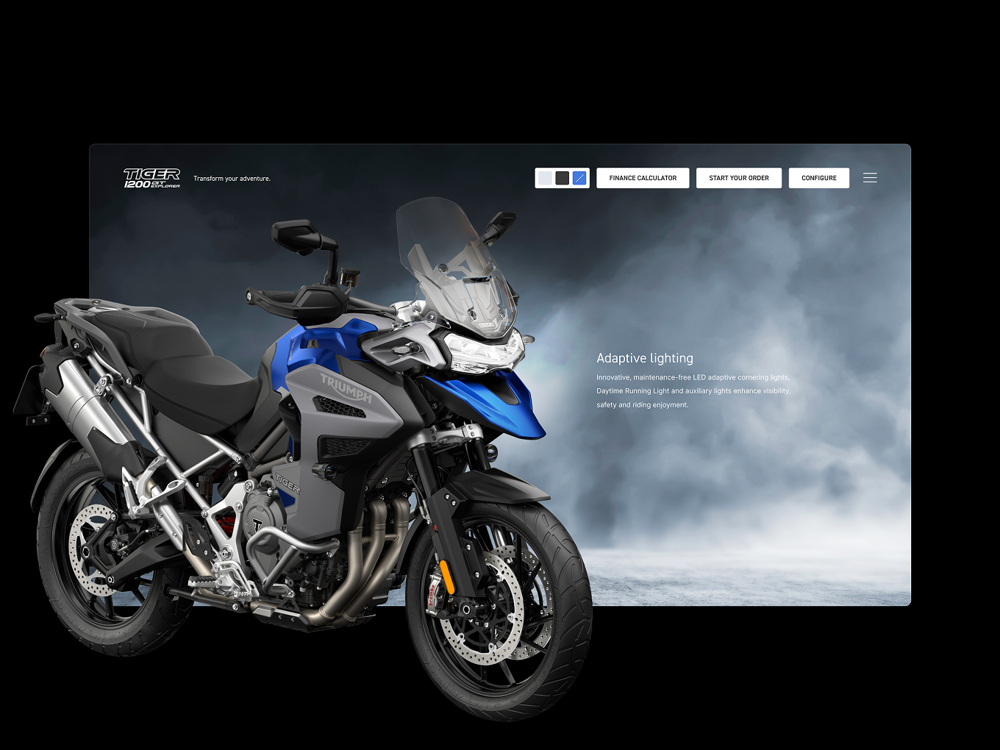
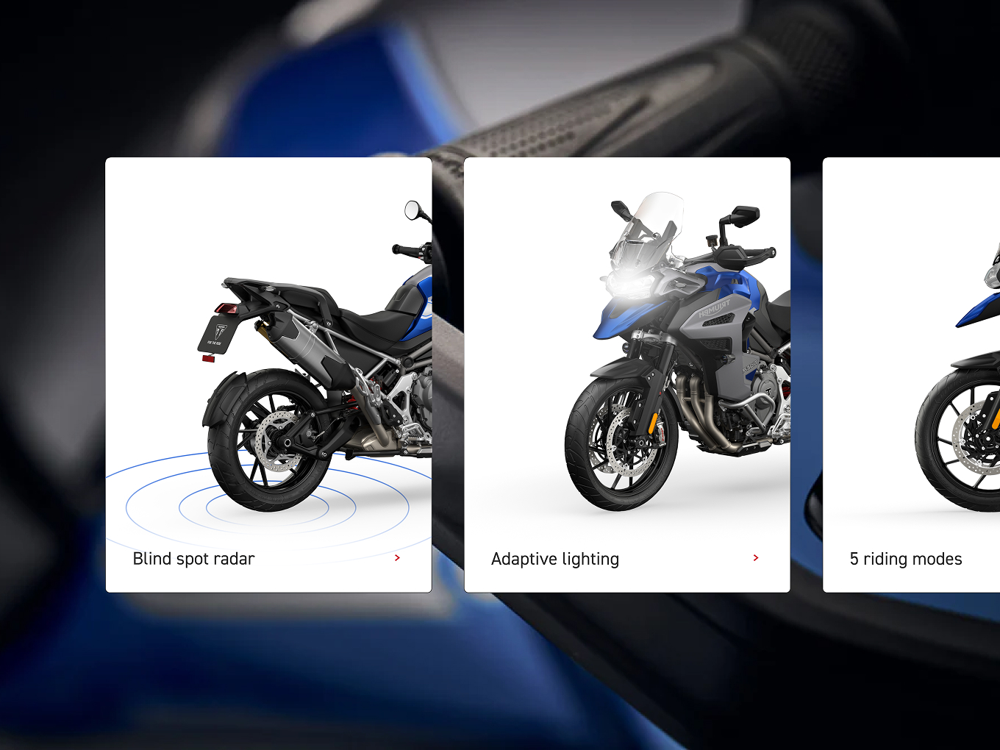
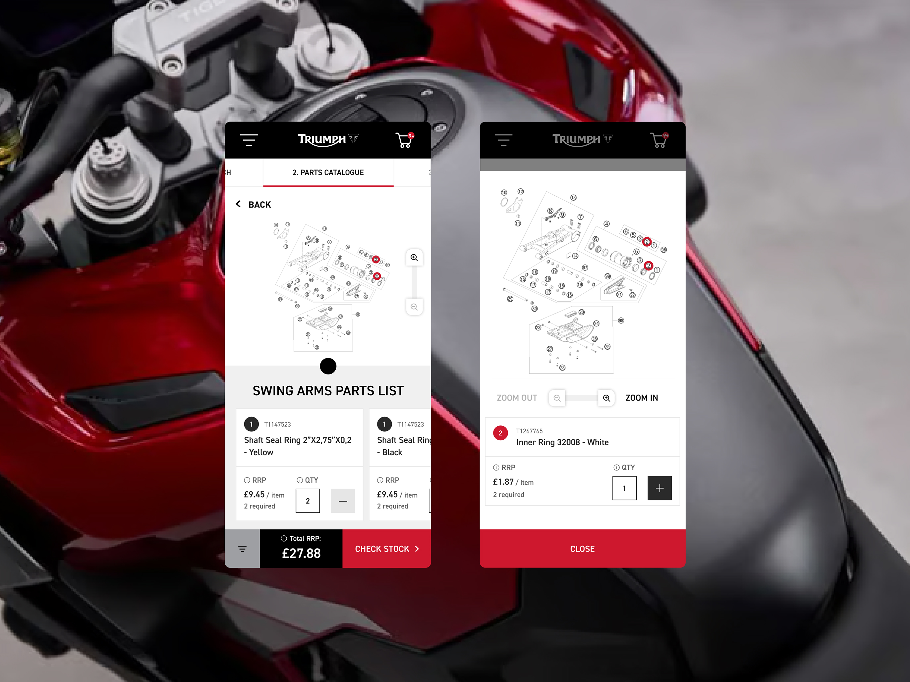
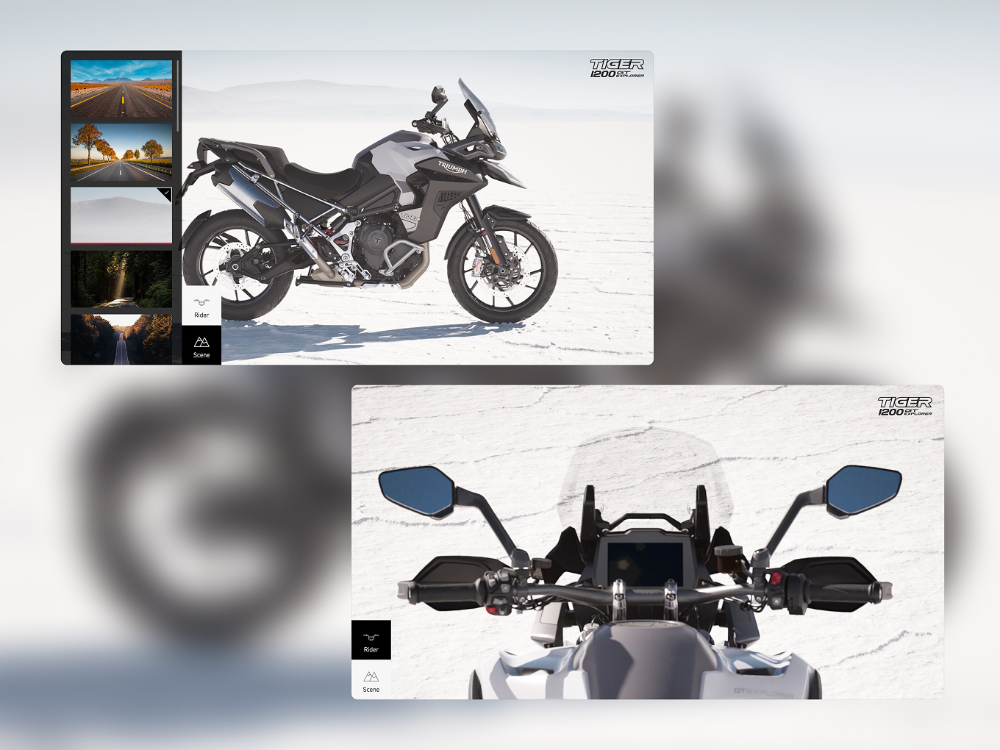
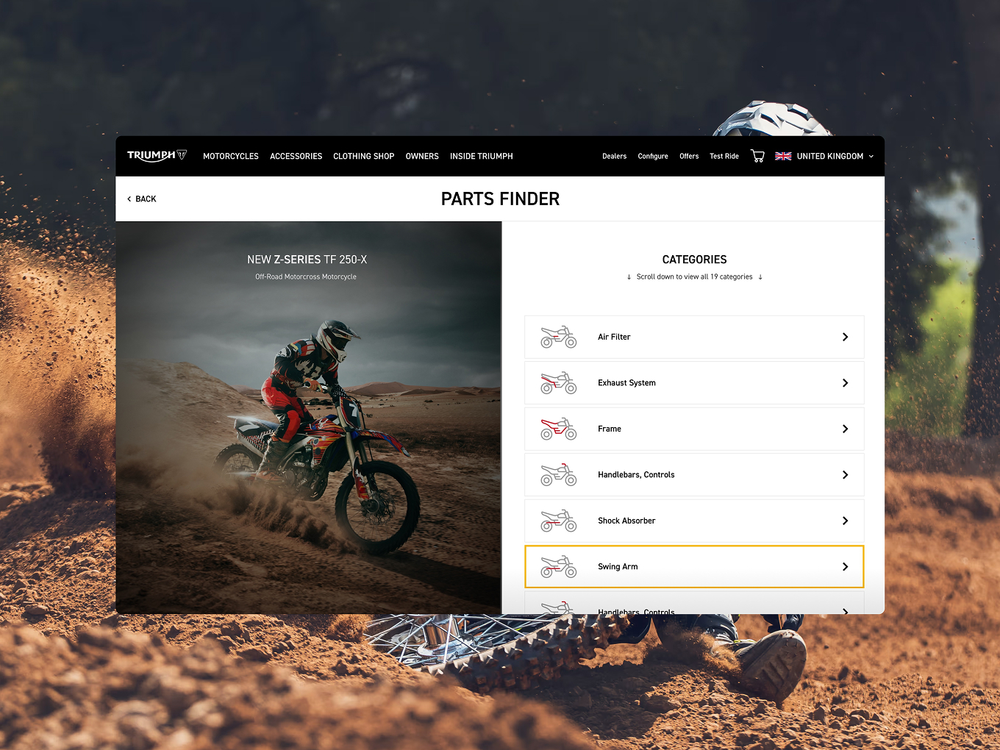
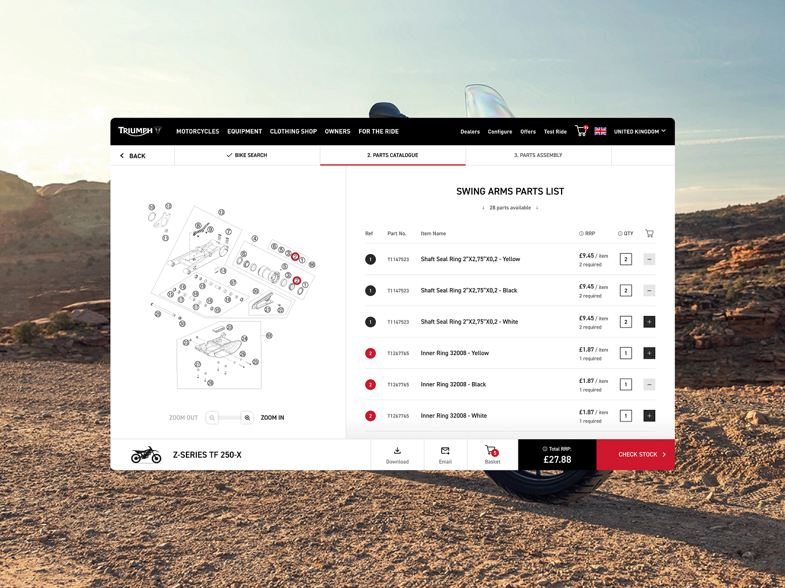
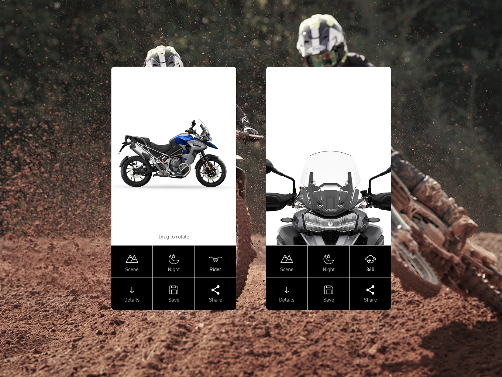

Triumph Motorcycles
From Spec Sheet to Digital Test Ride
Triumph's Tiger range is packed with configuration options, colours, and accessories, and none of that complexity was translating online. Riders were left guessing at what a build would actually look like before they ever spoke to a dealer. I led the UX, design system, and configurator experience for a new online build tool, simplifying the decision path and pairing it with real-time 3D interaction so riders could see exactly what they were choosing, right down to finding the specific parts they needed. It gave Triumph a scalable configuration system that lifted engagement and purchase confidence ahead of dealer contact, and it went on to win DEPT® a global Sitecore Ultimate Experience Award.
Results
- Increased engagement across Tiger models and accessory exploration
- Reduced purchase friction via the new part finder
- Improved pre-dealer purchase confidence
- Delivered a scalable 3D configuration and design system, reusable across future launches
- Global Sitecore Ultimate Experience Award

The Challenge
Configuring a Tiger motorcycle online meant working through layers of models, colourways, and accessory combinations with almost no visual feedback. Riders couldn't easily picture their build, which meant a lot of unresolved intent by the time they reached a dealer. Finding the right individual parts was just as hard, buried in dense catalogues with no clear route in. For Triumph, that was a missed opportunity to build purchase confidence earlier in the journey, and to give dealers a warmer, better-informed lead.


The Approach
I started with the task flows riders were actually trying to complete: which model, which trim, which accessories, in what order, with what dependencies. That research shaped a much simpler configuration journey, one that broke a genuinely complex product into clear, sequential decisions instead of a wall of options. I also designed a dedicated part finder, letting riders navigate visual diagrams and categories to land on the exact part for their bike rather than searching blind, cutting friction out of the purchase flow.
The bigger call was pairing the configurator with real-time 3D interaction, so every choice a rider made was reflected instantly in a model they could rotate and inspect. I led, directed, and managed a team of Unreal Engine 3D artists to build fully accurate, fully customisable models of each bike, controllable down to colour and trim through a single precise render. That replaced what had been manual Photoshop edits for every trim variation with one system the wider team could keep updated indefinitely, a big shift in how Triumph could maintain the experience long after launch.
None of that would have scaled without the design system underneath it. It started in Sketch and moved to Figma partway through, and getting tokens and atomic design principles properly embedded was one of the most important decisions on the project, it's what let the configurator, part finder, and 3D layer all stay consistent as the product grew. I worked directly with Triumph's CMO throughout to keep the wider stakeholder group aligned behind that system and the direction it was taking.
Alongside the core build, I explored more immersive ways to bring the Tiger range to life, including interactive VR demonstrations, full 360° rotation models, and even engine audio samples, pushing the experience beyond a standard configurator into something closer to a virtual test ride. I also ran regular user testing on the configurator itself using Lookback, using what we learned to keep iterating the flow rather than treating launch as the finish line.

The Outcome
The rebuilt configurator increased engagement across Tiger models and accessory exploration, and gave riders a clearer, more confident picture of their build before ever contacting a dealer. The part finder reduced friction in the purchase flow, and ongoing Lookback testing meant the experience kept improving after launch rather than staying static. Just as importantly, the 3D configuration system and the design system behind it were built to be reusable, giving Triumph a scalable foundation for future model launches rather than a one-off tool. The work was recognised with a global Sitecore Ultimate Experience Award, DEPT®'s only Triumph-related award win that year.


Reflection
This project reinforced something I come back to often: the best way to simplify a genuinely complex product isn't to strip information out, it's to sequence it, back it with a system that can scale, and let people see the consequences of their choices in real time.

